WHAT'S NEW IN AVENGERLAND
2026
August 13, 2026 - Two new finds from Geoff Dodd, the Uxbidge Roas location had previously been missidentified as Lavinder Hill.
H83: Cherry Tree Lane, Alderbourne Lane,
Hawkswood Lane, junction, Fulmer, Buckinghamshire
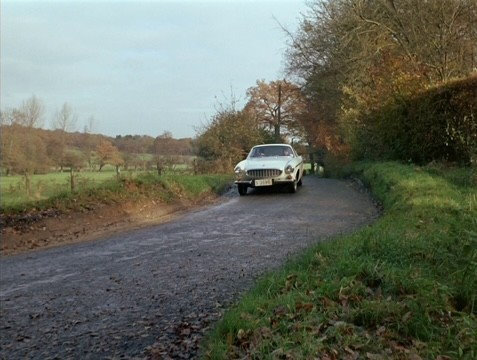
MAN IN A SUITCASE: The Revolutionaries (Peter Duffell: Late 1967)
McGill and Chantal are ambushed by Heidar’s men..
Uxbridge Road, London W12
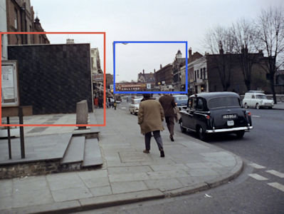
MAN IN A SUITCASE: Jigsaw Man (Charles Frend: February/March 1967)
McGill (Richard Bradford) and Silvio (Paul Bertoya) leave the police
station (Shepherd’s Bush Police Station , 253–258 Uxbridge Road) after
being interviewed.
(Spotted by Geoff Dodd, August 2026)
August 7, 2026 - The end on an
era, after 20 years of searching,
this location has finally been identified by Mark Osborne, August 2026.
Rue de l'Église, Neuilly-sur-Seine, Île-de-France, France
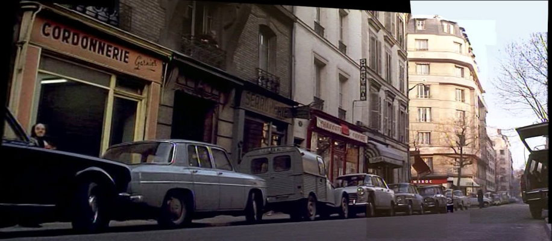
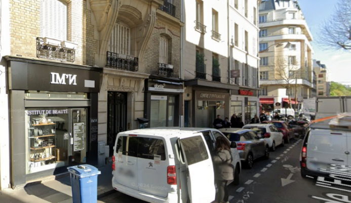
THE
SAINT: To Kill a Saint
(Robert Asher: November 1966)
Simon is not easily fooled and decides to
follow Annette across Paris along
this side road.
New Series Section:

June 20, 2026 - A nice set of
new location from THE NEW AVENGERS: Sleeper spotted by Alan
Hayes:.
Wapping Lane, London E1
THE NEW AVENGERS: Sleeper
(Graeme
Clifford:
September 1976)
Policemen's view down the road (named
'Pemberton Street' on a map seen in the episode) as their patrol
car passes on Wapping High Street.
(Spotted by: Alan Hayes, April 2026)
Albert Embankment, London SE1
THE NEW AVENGERS: Sleeper
(Graeme
Clifford:
September 1976)
Purdey’s view of the other side of the river (The Decca building, 9 Albert Embankment,
is the only one still standing).
(Spotted by Alan Hayes, April 2026)
King
Street, London W6
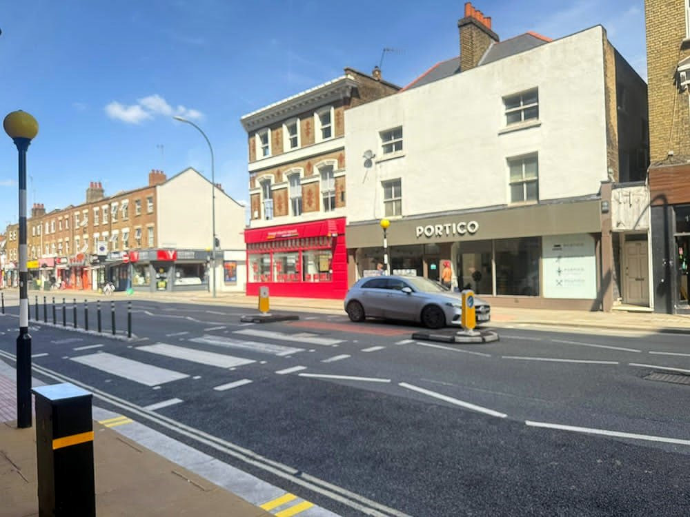
photo: Andrew Stocker June 2026
THE NEW AVENGERS: Sleeper
(Graeme
Clifford:
September 1976)
At night, Steed drives towards Purdey’s flat passing the National
Westminster Bank (180 King Street /
‘Selden Corner’) and
a row of shops before turning right into Nigel Playfair Avenue, a side
road running past the ABC Cinema and the modernist Fulham and
Hammersmith Town Hall extension building (the
ABC was demolished in March 2017 and subsequent redevelopment removed
access to Nigel Playfair Avenue from the King Street end; the civic
building was taken down in 2019-2020).
(Spotted by Alan Hayes, April 2026)
May 27, 2026 - An unexpected
surprise from Geoff Dodd, who has found the Greenways
Nursing Home fro the THE
SECRET SERVICE:episode The Cure.
A lot of time has been spent over many years to try and find this
location - and even though we now know where it is, it is still
difficult to find suitable images online, but Geoff has also obtained
permission to take photographs of the property as it is now
Mill House, Riversdale [Private Road], Bourne End,
E3: Cookham, Buckinghamshire
THE
SECRET SERVICE: The Cure (Leo
Eaton: Autumn 1968)
Father Unwin (Stanley Unwin)
arrives in his Model T Ford, Gabriel, at Greenways Nursing Home (Mill House, Riversdale, Bourne End)
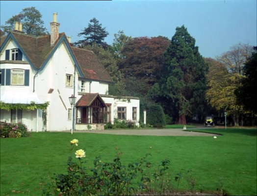
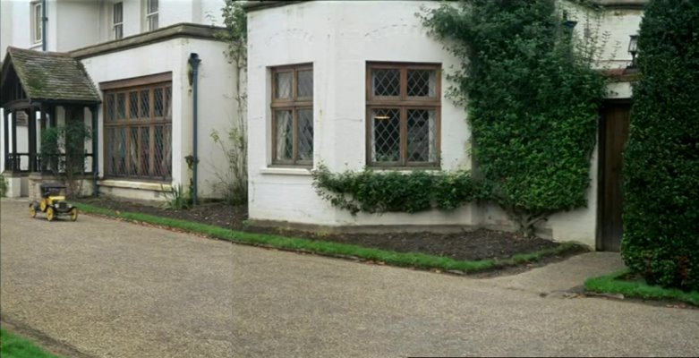
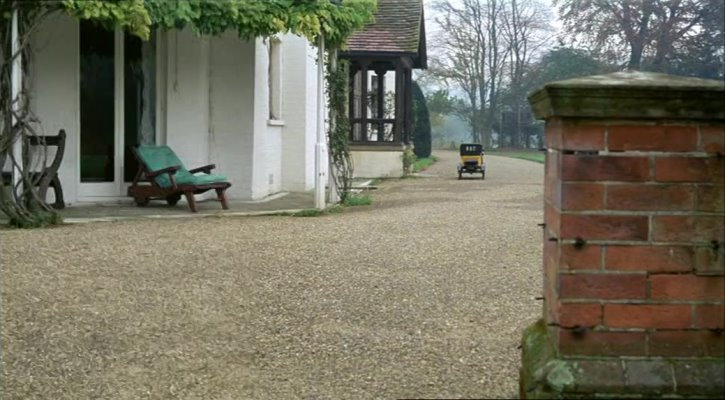

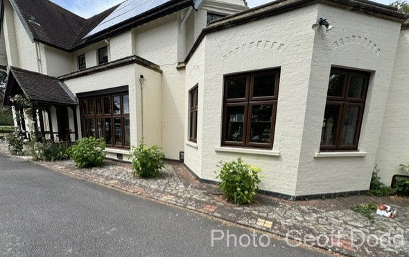
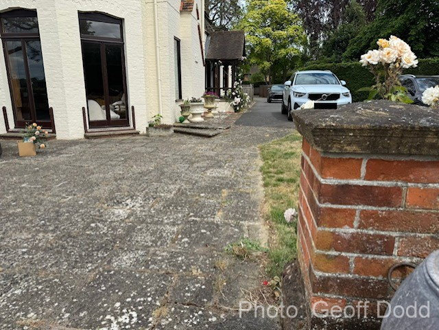
March 15, 2026 - Many thanks to
Harper
Habbersett for sending in this corection to a previously
missidentified location.
The Parade, Watford Town Centre
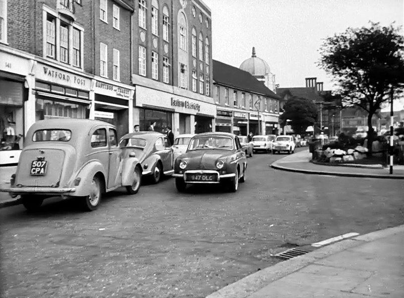
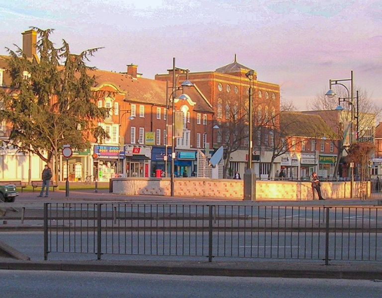
THE SAINT: The Well Meaning Mayor (Jeremy
Summers: 1963)
Hackett's Renault drives away from Templar’s hotel, through Seatondean (Past the The Pond Post office and
the Offices of the Watford Post, on The Parade).
2025
November 25th, 2025 - Thanks to Jaz
Wiseman we are able to present an interactive map detailing the
locations in Venice for the RETURN OF THE SAINT episode Duel in Venice - the map can be found HERE.
October 26th, 2025 - An unexpected find from Geoff Sockett
Les Deux Magots, Place Saint Germain des Prés,
Paris, France
JASON KING: Toki
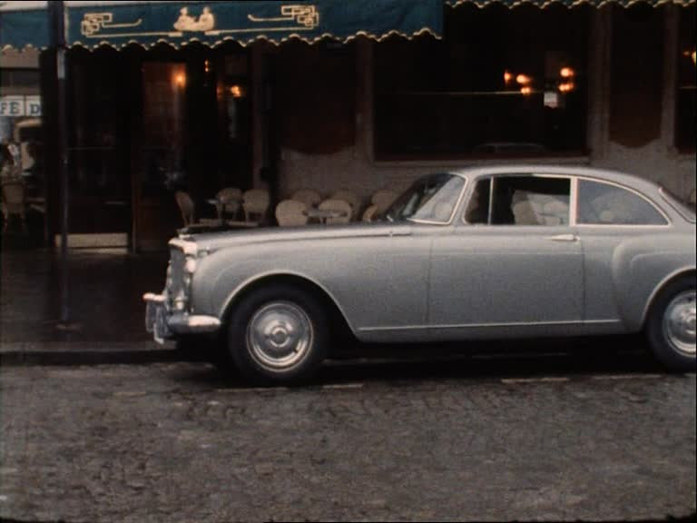
March 6th, 2025 - Once thought impossible to find, Sietse Postma has tracked down
these two Roman loactions from The Protectors
Muro dei Francesi, Ciampino, Rome, Italy
THE PROTECTORS: A
Case for Right (Michael Lindsay-Hogg, Summer 1972)
At house owned by
Prince Carpiano about five miles outside Rome,
Harry (Robert Vaughn) drives The Contessa (Nyree Dawn Porter) to one of
The Prince’s
exclusive costume
parties in his car. Chino
(Anthony Chinn) parks the Rolls in the car park just in case.


Villa Palladio,
Via della Camilluccia, Rome, Italy
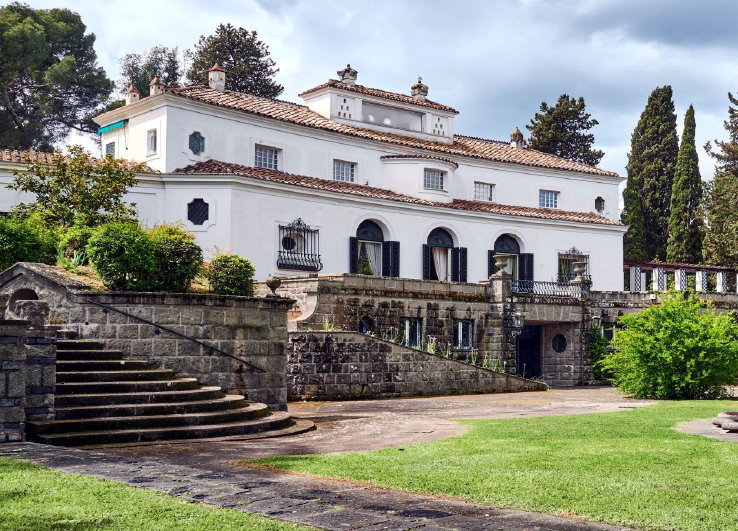
photo: Wannenes Properties
THE PROTECTORS: A
Case for Right (Michael Lindsay-Hogg, Summer 1972)
The Contessa’s villa near Rome
February 26th, 2025 - Two locations for the 'Avengers International'
section found by Sietse Postma.
The Municipal Market, Kingston, Jamaica

DANGER
MAN: Parallel
Lines Sometimes Meet (Don Chaffey: February
1965)
Drake reports to the World Travel offices in Port-au-Prince.
Panepistimiou Street, Athens, Greece
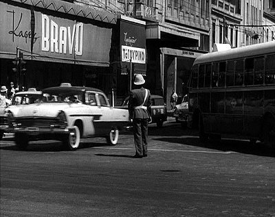
DANGER
MAN: It's up to the
Lady (Peter Maxwell: May
1964)
John Drake is staying in the same hotel in Athens as Paula Glover.
February 24th, 2025 - A nice find from Geoff
Dodd of a another totally redeveloped location.
L14: The Sun Engraving Company Ltd.,
Whippendell Road, Watford (redeveloped)

THE
SAINT: The Romantic Matron (John
Paddy Carstairs:1962)
The security van drives out of town passing a large factory.
February 21th, 2025 - Two
tricky finds as Eqypt isn't covered by Street View, from Sietse Postma.
Ras El-Bar, Damietta Governorate, Egypt,


THE CHAMPIONS: Desert
Journey (Paul Dickson: Spring
1968)
Establishing shot of Kasfareet, El Hami where Major Tuat is preparing
for the peace conference.
Dr.Salem El-Hendawy Palace Abdullah El-Kateb Street, Dokki, Giza, Egypt
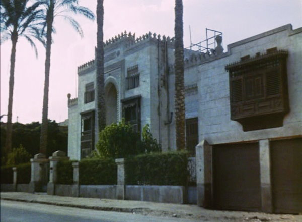
DANGER MAN: I
Can Only Offer You Sherry (George Pollock: 1965)
Drake
goes to police headquarters to confront Colonel Nubar.
THE CHAMPIONS: Desert
Journey (Paul Dickson: Spring
1968)
A peace conference is taking place in Kasfareet, El Hami which could
determine the fate of the country.
February 16th, 2025 - A great
way to start the year - a wonderful selection of 'impossible finds'
from Sietse Postma.
Park Road, London NW1

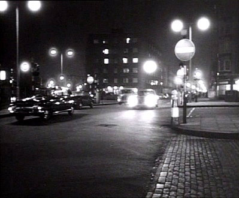
GIDEON’S WAY: The Alibi Man (Cyril Frankel:
February 1965)
Late
at night Bruce Carroway races back to his garage through the
London streets (junction of Park Road and Gloucester Place) after his
partner starts to examine the company records.
San Vicente de
Chucurí, Santander, Colombia

DANGER
MAN: Two
Birds with One Bullet (Peter Yates: 1965)
John Drake has been
installed in a British Colony to investigate the methods and intentions
of the
nationalists led by Doctor Shargis.
Betchworth, Surrey

DANGER MAN: Whatever
Happened To George Foster? (Don Chaffey:
November
1964)
The home country home of Mrs
George Foster.
Jardi Botanic de Cap Roig, Palafrugell, Spain
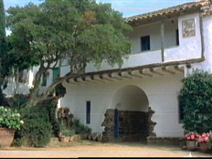
THE
PROTECTORS: The Quick Brown Fox
(Don Chaffey: Summer
1971)
Spanish villa being used by The Contessa (this is now the ticket office and
entrance to the gardens).
St Gegis Hotel (formerly
Grand Hotel), Piazza Ognissanti, Florence, Tuscany, Italy

DANGER
MAN: Have
a Glass Of Wine
(Peter Maxwell: 1964)
John
Drake has followed Kathleen Mary Martin from Paris to a hotel in
Burgundy. He
checks in.
Identified by Sietse Postma,
February 2025
Also used in the film Le Ragazze di San Frediano
(1955)
2024
October 21st, 2024 - Originally
identified by Stephen Cowin,
May 2007 with caveats, and finally confirmed by Geoff Dodd.
I7: Napsbury Station (demolished)
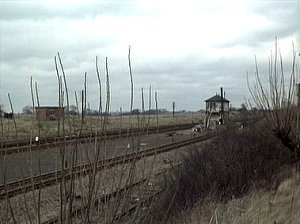
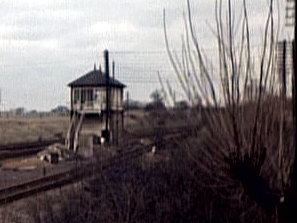
THE AVENGERS: A
Funny Thing Happened on the Way to the Station
(John Krish:
March 1967)
Crewe
takes Mrs Peel and the Secret Service agent to his signal box (Napsbury Signal Box)
(Identified by Stephen Cowin, May
2007 and cofirmed by Geoff Dodd, October 2024)
June 30th, 2024 - Geoff Dodd
does it again!
West Carriage Drive, Hyde Park, London W2

MAN IN A
SUITCASE: Web
with Four Spiders (Robert Tronson:
January 1967)
After explaining the
situation to McGill in the back of his car, Simon Croft dumps McGill by
the
side of the road.
June 9th, 2024 - Another nice find by Geoff
Dodd, of a seemingly untouched London street.
Roland Gardens, London SW7
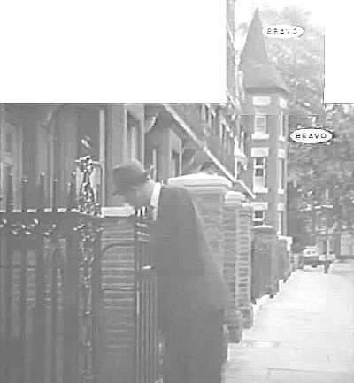
SABER OF LONDON:
Come Out Fighting (Godfrey
Grayson: 1960)
Mark Saber (Donald Grey) at last finds Joe Ward and gets the
information he has been seeking.
June 4th, 2024 - Pierre Alfonsi
has done well to track this one. It's been hard to find despite its
distinctive shape.
Lake Nakuru, Kenya
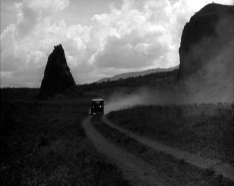
DANGER MAN: Loyalty
Always Pays
(Peter Yates: 1965)
Stock shot of Africa
(Fischer’s Tower)
April 7th, 2024 - An unexpected find by Jaz Wiseman, especially as we didn't
know we were missing it.
Hampstead High Street, London, NW3
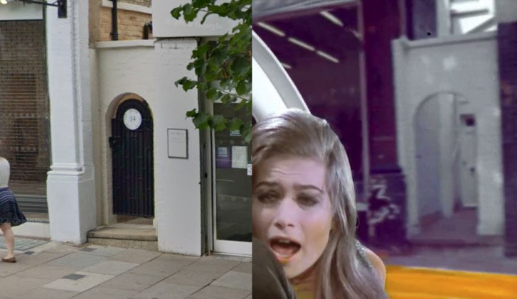
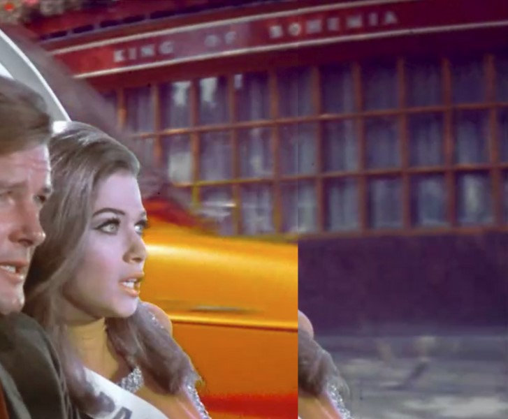
THE PERSUADERS!: The
Long Goodbye (Roger Moore
1971)
Brett has hitches a ride on a rocket car driven by the Space Queen
(back projection).
April 2nd, 2024 - The first Action City location
in the N5 postcode area - no wonder it's taken so long for Geoff Dodd to track it down.
Petherton Road, London, N5

THE SAINT: When
Spring is Sprung (Jim
O'Connolly: March 1967)
Joanne drives spring to the safe house followed by Simon Templar in his
Volvo (between the junctions of Poets Road and
Ferntower Road).
March 31st, 2024 - Finally, all the locations from Boy With Gun have been identified thanks to Geoff Dodd.
Wapping Lane, London, E1

GIDEON’S
WAY: Boy With Gun (Jeremy Summers:
May 1965)
Keen and his driver patrol the docks looking
for the boys (Wapping Lane junction with Prusom Street).
March 31st, 2024 - We nealy have all the locations from Boy With Gun identified after these two finds
by Geoff Dodd.
Sampson Street, London, E1

GIDEON’S
WAY: Boy With Gun (Jeremy Summers:
May 1965)
Chris Kirk (Howard Knight) and Vince Kelly (Michael Craze) are
chased past
warehouses by a policeman after their arrival in London.
Knighten Street, London, E1
(formerly Hermitage Wall)

GIDEON’S
WAY: Boy With Gun (Jeremy Summers:
May 1965)
Chris Kirk (Howard Knight) and Vince Kelly (Michael Craze) are chased
past warehouses by a policeman after their arrival in London.
March 30th, 2024 - After 20 years of searching by the 'regulars', this
street market had finally been identified by Phillip Judge. This is a time
capsule as everything has been redeveloped other than the council flats
seen in the distance.
Hoxton Street, London, N1


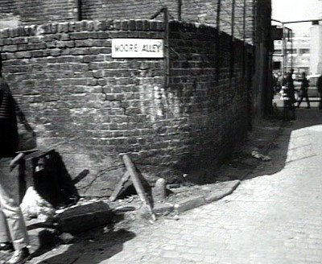

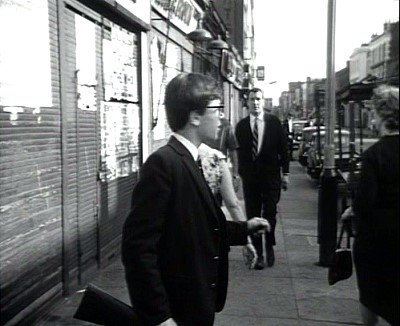
 GIDEONS WAY: Boy
With Gun (Jeremy
Summers: May 1965)
GIDEONS WAY: Boy
With Gun (Jeremy
Summers: May 1965)
Establishing shot of London Market (corner of Hoxton Street and
Purcell
Street, redeveloped). Chris Kirk (Howard Knight) is
cornered by a gang
of youths in Moore Alley (Dormer Mews,
redeveloped). Mick Murphy (Roger Foss) is shot.
Chris runs into the street (Hoxton Street, opposit Purcell
Street), but has to
turn back when he sees two of the gang members talking to a police man.
Later, Doctor Kirk (Anthony Bate) goes to the crime scene to
attend to
the injured boy.
24th March, 2024 - So good to see this one finally found -
especially as it looks nothing like you'd expect in real life - well
done Jaz Wiseman.
46 Harbinger Road, London, E14


GIDEON’S
WAY: Boy With Gun (Jeremy Summers:
May 1965)
Finny goes
around to Tim Murphy’s (George
Sewell) house (46
Harbinger Road).
21st March, 2024 - Alan Field
has done an excellent job finding this location quite a distance away
from the other location in the epuisode.The location is surprisingly
unchanged.
Lennox Road, London, N4
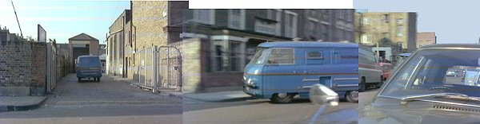
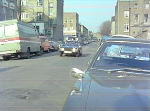
THE PROTECTORS:
Blockbuster (Jeremy
Summers: 1973)
The stolen Security Van drives into a yard (Fonthill Mews)
where it is
re-sprayed white while the police continue to search the area in their
patrol car.
17th March, 2024 - Geoff Dodd
has finall identified this very old chestnut.
Oak Hill Park, London, NW3

THE
SAINT: Staring the Saint (James
Hill: 1963)
Simon gets a
call from Byron Ufferlitz
to meet him immediately so Simon takes April Quest back to her
apartment before
setting off in his Volvo to see Ufferlitz.
12th March, 2024 - Some more detail and excellent photos
from Mark Osborne
The Promenade, Kessingland nr. Lowestoft,
Norfolk
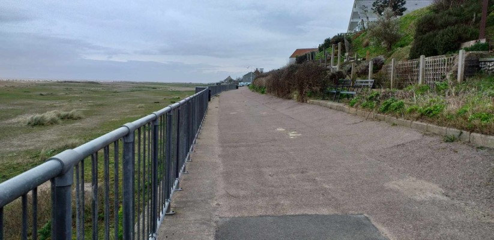
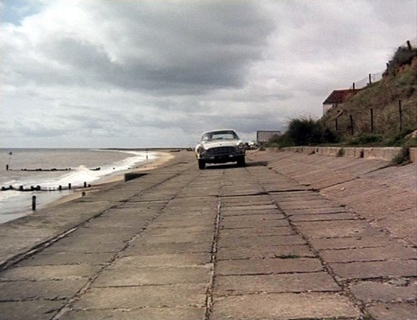
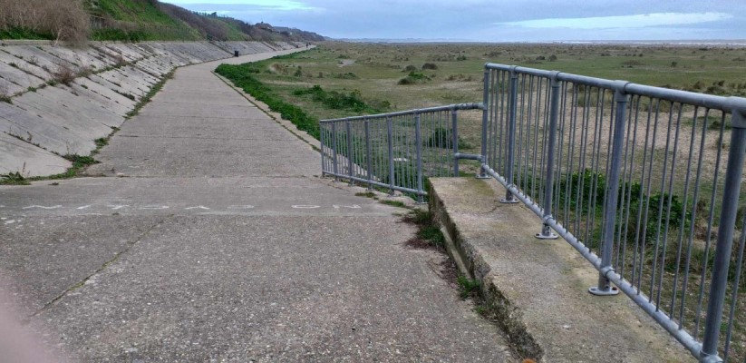
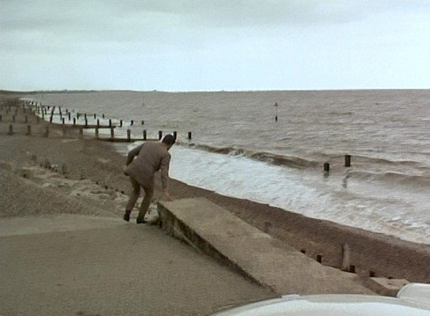
THE SAINT: The Best
Laid Schemes (John
Moxey: May 1967)
Simon Templar drives down to the sea in his Volvo to wax lyrical about
Neptune's Kingdom (Waveney Dock, Lowestoft). He arrives in time
to witness
Diana's discovery of a
body on the beach (The Promenade, Kessingland). Later Simon
takes his
Volvo to investigate Captain
Fleming's fishing business (Waveney Road, Waveney Dock).
21th February - Geoff Dodd
very good find - 20 years hard work!
Riley Road, London, SE1
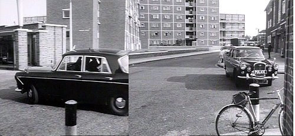
GIDEON'S
WAY: Subway to Revenge
(Roy Baker: January 1965)
John
Stewart notices that police cars are searching the area.
GIDEON’S WAY: The
Reluctant Witness
(Jeremy Summers, April 1965)
All available cars are called into the area.
21th February - Geoff Dodd
is on a roll.
Q42: Peter’s Close,
Stanmore

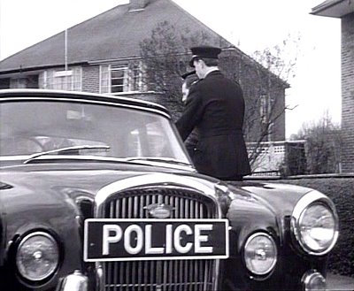

GIDEON'S WAY: Subway
to Revenge (Roy Baker: January 1965)
Commander
Gideon (John Gregson). and Detective Chief Inspector David Keen
(Alexander Davion) are at number 29 (redeveloped) arresting the leader
of a gang involved in an armed robbery.
20th February - Another two finds by Geoff
Dodd
Q42 - Cavendish Drive, Edgware


GIDEON'S WAY: Subway
to Revenge (Roy Baker: January 1965)
James Lane (Donald Churchill) arrives
home (20 Cavendish Drive) but is being
watched by John Stewart (Bryan Pringle).
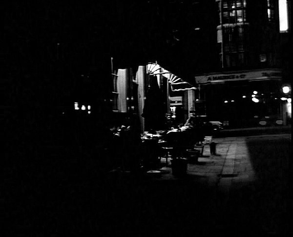
GIDEON’S WAY: Morna
(Cyril Frankel, October 1964)
David makes a call to Morna’s secret flat at 43 Shepherds Market.
19th February - Some great detective work from Geoff Dodd.
Q41: Dukes
Avenue, Stanmore

GIDEON'S WAY: Subway
to Revenge (Roy Baker: January 1965)
As he is in the area Commander Gideon (John Gregson) takes the
opportunity to visit Martha Robson’s home (15 Dukes Avenue).
16th February - Another tricky find from Sietse Postma.
Oxford Road, London, NW6

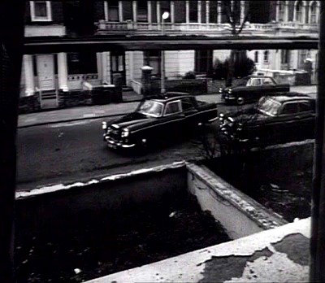
GIDEON’S WAY: The
Great Plane Robbery (Leslie
Norman: March-April 1965)
The injured Frank is taken by his friends to the
trustworthy Dr. S.G. Hill (26 Oxford Road).
Hill calls in the police as soon as he realises the connection of his
patient
to the gold robbery. The police arrive (seen from a house opposite
no.46 and 48, demolished).
15th February - A nice one from Sietse
Postma showing a location that has changed beyond recognition.
Braitwaite Street, London, E1

GIDEON’S
WAY:
Big Fish, Little Fish (Cyril
Frankel: October 1964)
Gideon and
Hemmingway are driven
in Gideon’s car round to the Gowan’s
shop (Wheler Street tunnel under Bishopgate Goods Station, redeveloped)
14th February - Three from Sietse
Postma
Cresswell Place, London, SW10


THE HUMAN JUNGLE:
Just for
the Record (Vernon Sewell: 1963)
Penny (Jane Merrow) and David Branch (Philp Gilbert)
live in a London
Mews flat.
Off the M600 between El-Boalo and
Manzanares el Real, Madrid, Spain

THE COUNT OF MONTE CRISTO: A Toy for the Infanta
(Charles Bennett, 1955)
Collingham Place, London, SW5

H. G. WELLS'
INVISIBLE MAN: Flight
Into Darkness (Peter Maxwell: 1959)
The
Invisible Man drives to
Harrow Lane with Pat Stevens in his Austin Healey.
13th February - Spotted by Geoff
Dodd.using this back projection footage filmed for MAN OF THE WORLD.
Pancras Road, London, NW1

GIDEON’S WAY:
The Firebug (Roy Baker: September 1964)
Gideon follows ( looking north towards the junction with Crowndale Road
with the tower of St Pancras Hospital visible in the background)
11th February - Nice to get thei one knocked off thanks to Geoff Dodd.
G7: Camlet Way, Hadley Wood

THE SAINT: Staring
the Saint (James Hill: 1963)
Simon
gets a call from Byron Ufferlitz to meet him immediately so Simon
drives there and parks his Volvo on a side road next to the house (Wood
Ride). After finding Ufferlitz dead and Peggy Warden in the house (4
Camlet Way) he helps her escape as the police arrive. They both make
their escape in the Volvo.
4th February - A hard location to find because none of it exissts
anymore, found and confiirmed by Geoff
Dodd.
Old Montague Street, London, E1
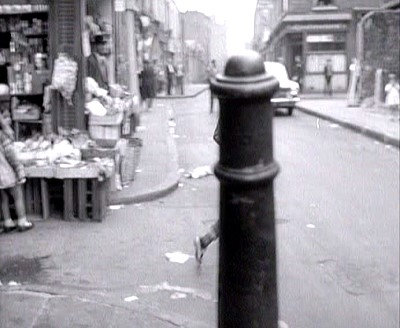

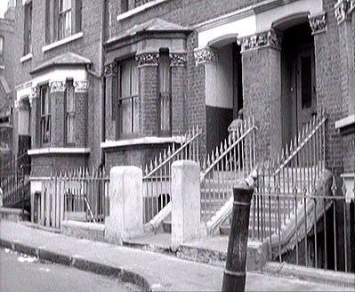

GIDEON’S WAY: Big
Fish, Little Fish (Cyril Frankel: October 1964)
Peter
Wray (Alan Baulch) makes his way home, but does not know he has been
followed. Later that night Commander Gideon pays the Wray’s a visit.
29th January - A wonderful selection of finds from Sietse Postma:
Eaton Place, London, SW1

THE SAINT: The Rough Diamonds (Peter Yates: 1963)
After Simon and Barbara Sinclair leave Barbara’s flat, in the Volvo,
they are followed by Rocco an Joe in their Zephyr. This soon turns into
a game of cat and mouse (back projection 56 - 62 Eaton Place).
Hampstead Lane, London, N6
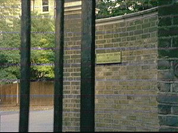

THE PROTECTORS: Balance of Terror (Jeremy Summers: Autumn 1972)
Colonel Krassinkov watches as The Contessa and Harry
leave the Soviet Embassy (Beechwood House) and take a taxi at the gates.
Junction of Exchange Street/High Street, Watford
(redeveloped)
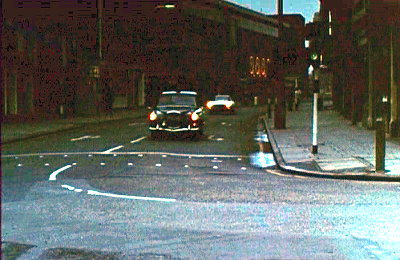
THE
SAINT: Escape Route (Roger Moore: October 1966)
The
Saint manages to escape from Teal and is chased by the Inspector in a
police car.
Porchester Terrace, London, W2

SABER
OF
LONDON:
The Penny Black (Max Varnel: 1957)
After
leaving the café Rosie (Jan
Holden) sets off alone. Pete is instructed to follow her (from
Prochester Gardens on to Porchester Terrace).
Rue Saint-Vincent, Paris, Île-de-France, France
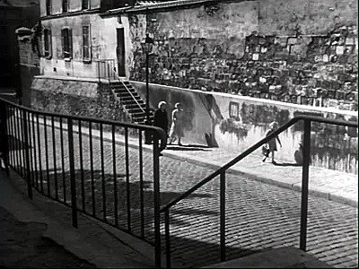
MARK
SABER aka THE VISE aka UNCOVERED: Death Needs No
Cane
(Splinters
Deason: 1956)
Establishing
shot of Paris where the engraver Pierre Bouchalon meets
with the forgery
mastermind.
D5: Knebworth House, Old Knebworth, nr. Stevenage


GIDEON’S WAY: Morna
(Cyril Frankel, October 1964)
A
fisherman finds shoe whilst fishing he finds a body (lake by
Wintergreen Woods) he races to the home of the village constable
(Gardener's Cottage) to raise the alarm.
Club Panama Theatre,
Great Windmill Street, London, W1

THE SAINT: Luella
(Roy Baker: 1963)
Simon acts guide to a night on the town with Bill, including The Club
Panama.
Embassy of France, Technikerstraße 2, 1040
Vienna, Austria

DANGER MAN:
A Room in the Basement
(Don Chaffey:
1964)
Establishing shot of
Susan Turbull’s
hotel
Iglesia en Soto del Real. madrid, Spain
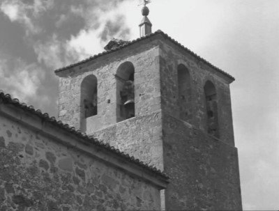
THE COUNT OF MONTE CRISTO: A Toy for the Infanta
(Charles Bennett, 1955)
Vienna, Austria
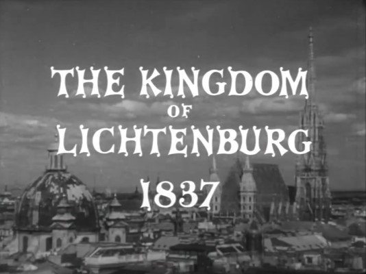
THE COUNT OF MONTE CRISTO: Lichtenburg
(Charles Bennett, 1955)
The Kingdom of Lichtenburg, 1837 (Identified by Sietse Postma, January
2024).
Kasteel Sorghvliedt, Antwerp, Belgium
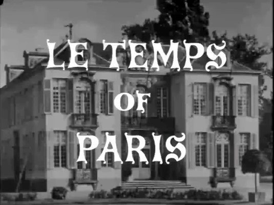
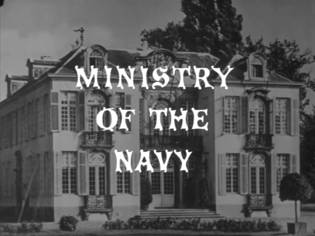
THE COUNT OF MONTE CRISTO: A Matter of Justice
(David McDonald, 1955)
Monte Cristo is called to the offices of Le Temps de Paris to see the
editor.
THE COUNT OF MONTE CRISTO: The Grecian Gift
(Dennis Vance, 1956)
The Count accompanies Antoine to the Ministry of the Navy, Paris
Nassau
Harbour, Bahamas

DANGER
MAN: Two
Birds with One Bullet (Peter Yates: 1965)
John Drake has been
installed in a British Colony to investigate the methods and intentions
of the
nationalists led by Doctor Shargis.
Giaglione, Piedmont, Italy

THE
CHAMPIONS:
The Final Countdown
(John Gilling:
January 1968)
The
conspirators track down the pilot of Heinkel that dropped the bomb and
pay him a visit (establishing shot of church of San Vincenzo)
Because there are so many, a reminder that all the above were found by Sietse Postma.
29th January - Very good news that Geoff
Dodd has knocked this one off at last.
R3: Totteridge Village, Totteridge


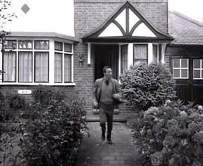
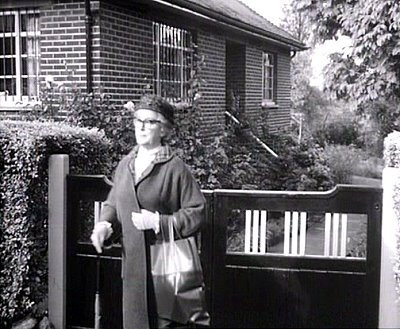
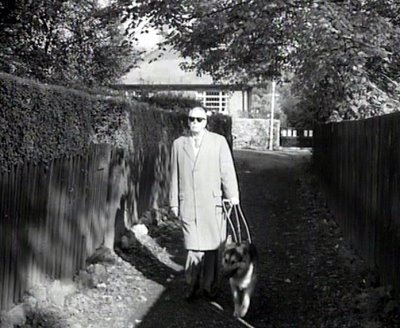
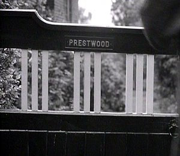
GIDEON'S
WAY: The Housekeeper (Leslie
Norman: 1965)
Electrician, Ralph Maricut (Harry Fowler) arrives
at the home of Mr.
Henderson (Devoran House, Lime Grove - redeveloped).
to do some work
and finds him dead in the bath. He runs to a neighbour’s house to use
the telephone. Martha Smallwood (Kay Walsh) arrives
back at the house
later that day to find the police waiting.
Mrs Warren (Kay Walsh) leaves Percy Whitehead’s house (Prestwood,
Lime
Grove - redeveloped). After a walk in the park Percy
Whitehead (Oliver
Johnson) arrives home. Mrs Warren arrives one day to find the
police
questioning all the single aged men in the area. The postman (Richard
Davies) is suspicious of Mrs Warren’s reaction the next time
he sees
her. Later, Detective Superintendent Warr (John Dearth),
Commander
Gideon (John Gregson) and Detective Chief Inspector
David Keen
(Alexander Davion) arrive in a police car to follow
up a report from
the local constable.
(Identified by Geoff Dodd, January 2024)
23rd January -
1st January - A new location spotter, John
Pizinas has finally identified this The
Saint location.
Redhill Street, London, NW1
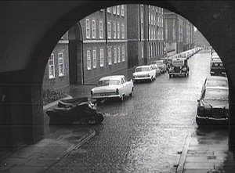
THE SAINT: The Saint
Plays with Fire
(Robert S. Baker: 1963)
Ralph arrives at John Kennet’s flat in a taxi. A day or so later Simon
Templar arrives in his Volvo to speak to Ralph Windlay.
C15: Luton
Airport, Luton
THE
PROTECTORS: The Last
Frontier (Charles Crichton: 1972)
Harry Rule (Robert Vaughn) and John Eastbrook (William
Lucas)
arrive at the airport to meet Dr Irena Gayevska (Hildegard Neil)
and
Caroline (Nyree Dawn Porter). Jones Jeffries (Peter Cellier)
and
another British agent (Alan Harris) are also waiting for Irena.
Geoff also spotted the use of an Avergelan
favourite in a film:
I5: Handley Page
Factory/Radlett Aerodrome (closed 1971 and re-developed)
Film:
ASSASSIN (1973)
2023
21st November - Another Malta location finally identified by Sietse Postma.
House opposite Fontanella Tea
Garden, Bastion Street, Mdna, Malta


THE PROTECTORS:
A Matter of Life and Death
(Don Chaffey: Summer 1971)
James
Leroy Mallory (Patrick Allen) together with his heavy, Baruna (Maxwell
Shaw) and
his girlfriend (Julie Crossthwait), are renting a villa in the town.
The
Contessa (Nyree Dawn Porter) pays them a visit pretending to be a buyer
for
their merchandise.
9th November - So dedicated detective work by Geoff Dodd has
finally revealed the location of this farm - a new location to add to
the Guide.
G33: Ganwick Farm on Wagon Road,
Barnet

photo: Geoff Dodd
DEPARTMENT S:
The Duplicated Man
(Paul Dickson:
Spring 1969)
Russian agents in a “Joe’s
Television Service” van watch as Stewart Sullivan drives past on his
way to
find Jason King who has just jumped with a parachute.
8th November - A location we've been looking for for many
years finally idenitified by Michael
Richardson.
Hampstead Cemetery, Fortune
Green Road, London NW6
The location footage was originally shot for the RANDALL
AND HOPKIRK [DECEASED] episode My
Late Lamented Friend and Partner, by Jack Lowin and Gerald
Moss but not used. Some of the footage can be seen HERE.
DEPARTMENT S: The
Ghost of Mary Burnham
(Cyril Frankel: 1968)
The grave of Mary Burnham.


THE ADVENTURER: Skeleton
in the Cupboard
6th November - I nice find by Nick
Cooper, the distinctive wall is still there.
Alpine Road, off Frenches Road,
Redhill, Surrey

DIAL 999: Exeption
to the Rule
You can find the DIAL 999
pages HERE
31st October - An interesting back-street location found by Nick Cooper after
some dedicated research.
Tavistock Mews, London W11
DIAL 999: Robbery
with Violence
You can find the DIAL 999
pages HERE
15th October - Some team work from Allen
Dace and Michael
Richardson.
Frankfurt Airport
DEPARTMENT S:
Les Fleurs du Mal (Cyril
Frankel: 1969)
Establishing shot, Rome, Italy, September 26th.
(Identified by Allen Dace, October 2023)
Leonardo da Vinci–Fiumicino Airport

DEPARTMENT S:
Les Fleurs du Mal (Cyril
Frankel: 1969)
Rome,
Italy September 26th: After their plane lands, The Brandini brothers
and several passengers follow the stewardess to the terminal (back
projection).
(Identified by Michael Richardson, October 2023)
8th September - an intersting find from Geoff Dodd
J10: All Saints Pastoral
Centre, Shenley Lane, London Colney
(photo: Geoff Dodd, 2021)
RETURN OF THE SAINT: The Poppy Chain
(Charles Crighton: 1977)
Simon (Ian Ogilvy) and Jenny Platt (Jenny Hanley)
are at the hospital
wairing for news about Jenny's sister. They get bad news just as
General Platt (Laurence Naismith) arrives.
Geoff notes that the location is also used in:
THE PROFESSIONALS: The
Acorn Syndrome
(Martin Campbell: September 1979)
Bodey (Martin Shaw) and Doyle (Lewis
Collins) go to see Copeland (Ronald Hines)
at his daughter's school.
Television:
WIDOWS (1983)
30th August - An addition to the Kitt's End Road, Kitt's End
location already spotted by sam Denham in 1990, Geoff Dodd
has identified "an additional location - whilst the scene of Straker
getting changed at the side of the road is undoubtedly Kitts
End
Road, the first shots of the car appear to have been filmed
on
Trotters Bottom near to the Dyrham Park Gateway"
O4: Dyrham Park Golf Club
Gateway, Trotter's Bottom, nr. Dancer's Hill
UFO:
Confetti Check A-O.K.
(David Lane: November 1969)
Straker's American saloon, with the newly married Ed and Mary aboard,
drives along a country road (Trotter's Bottom seen
from Dyrham Park Golf Club Gateway).
3rd August - A wonderful collection of finds from Sietse Postma:
Loch Laggan, Inverness-shire,
Highland, Scotland (from Kinloch Laggan)

THE
AVENGERS: Castle De'Ath
(James Hill: August 1965)
Establishing shots of Scotland.
Strome Castle Loch Carron,
Stromemore, Ross and Cromarty, Scotland
THE
AVENGERS: Castle De'Ath
(James Hill: August 1965)
Establishing shots of Scotland.
Reisnerstraße, Vienna, Austria

DANGER
MAN: You’re
Not In Any Trouble, Are you? (Don Chaffey: February
1965)
John Drake goes straight
to the British Embassy when he arrives in Rome to investigate the death
of Bill
Ellis (41 Reisnerstraße).
Quai du Large, Cannes,
France

DANGER
MAN: The
Outcast (Michael Truman: 1964)
Establishing shots of Spanish Village on the cost de Sol.
Le Grand Lac, All. des
Genêts, Le Vésinet
THE
PROTECTORS: Disappearing
Trick
(Jeremy Summers: Summer 1971)
House where Brad Huron is
being “contained”.
Parque Natural de la
Montaña de Montserrat, Spain

THE
PROTECTORS: Disappearing
Trick (Jeremy Summers: Summer 1971)
After managing to evade Harry, The Contessa and Brad Huron leave Paris
for where?
2nd August - I've not had time to post these finds up
properly, but Sietse
Postma has been working hard finding loactions in
Malta. You can see the ruslts of his dedicated work on
these pages;
1st August - At long last this location has been identified and
confirmed with detailed comparison work from Jeff Watson of the Behind the Camera Facebook page.
R3: Northbank, Totteridge Lane,
Totteridge (demolished and redeveloped as 138 and 138a)

THE SAINT: The Time
to Die (Roy Baker:
April 1968)
Simon arrives in his Volvo at the address he has been given by Charlie
Mason. He finds that he has been expected.
28th July - Some more excellent detective work from Sietse Postma.
Brissago, Ticino, Switzerland
THE
CHAMPIONS:
The Final Countdown
(John Gilling:
January 1968)
Nazis divers search lake near Hallstadt, Germany, where the bomb was
dropped.
Rue Jeanne Darc, Beirut, Lebanon
THE SAINT:
The Russian Prisoner
(Peter
Moxey: February 1966)
In
Geneva, Professor Karel Jorovitch takes a taxi from the Embassy and is
followed by Russian security officers (Dodge Hall, American University
of Beirut in the background).
27th July - Two excellent bits of detective work from Geoff Dodd.
Q40: Woodside, Alum Lane,
Borehamwood (redeveloped)

THE
HUMAN
JUNGLE: Dual
Control (Roy Baker, ???)
Jane Harris (Mary Steele) arrives at Rest Harrow School for
Handicapped Children in her Hillman Imp to interview the Matron (Peggy
Marshall) on behalf of Dr Corder.
Later Jane Harris takes Jane Falcon (Annette Andre) back to work at
Rest
Harrow, but things to not work out well.
N55: The Wagon and Horses, Watling
Street, Elstree

THE
HUMAN
JUNGLE: Dual
Control (Roy Baker, ???)
Road to
at Rest Harrow School for Handicapped Children - Jane Harris drives
Jane Falcon
back to work at Rest Harrow in her Hillman Imp (Watling Street, just
before The Wagon and Horses).
27th July - More finds from Sietse
Postma.
Alfama, Lisbon, Portugal


DANGER
MAN: English
Lady Takes Lodgers
(Michael Truman 1965)
Establishing shot Lisbon including Rua da Adiça and View from
the roof of Igreja de Santo Estêvão.
26 Lansdowne Crescent, London W11
MAN IN A SUITCASE: Man
From The Dead (Pat Jackson:
August 1966)
McGill stakes drives Rachel Tyson back to her flat after he has
interrupted a possible meeting with her father (No.26).
26th July - Another nice surprise from Sietse
Postma -
this would never have been found without Sietse'sperseverance and the
house having a brush with fame: Click here to find
out more.
'The Pink Villa', 4 Norrkroken,
Lidingö, Stockholm, Sweden

THE PERSUADERS!: The
Morning After (Leslie
Norman: 1971)
Danny Wilde takes a taxi to Christianson's martial arts academy.
Film:
MISS AND MRS SWEDEN
(1969)
25th July - Some wonderful finds from Sietse
Postma
- one that we have been looking for since the 1980s and one
that was posted up only last week.
St Claire's, 38-40 Church Crescent,
St Albans

THE
SAINT:
The
Chequered Flag
(Leslie Norman: February 1965)
Lee and
Simon do to visit Hunter
at his boarding house
Ballygally Castle,
County Antrim, Northern Ireland
DEPARTMENT S:
One of Our Aircraft is Empty
(Paul Dickson: 1968)
The house was where Annabel and Jason were staying in Ireland.
F Street NW/13th Street
NW, Washington DC, USA


THE CHAMPIONS: Reply
Box No. 666
DEPARTMENT S: Black
Out (Ray Austin:
September 1968)
Wolfe and Stewart Sullivan are both driving through Nassau to get to
Strober, the club manager.
18th July - Some intensive detective work by Geoff Dodd finally
knocked this one off.
Brompton Road, London SW1
DEPARTMENT
S: Six
Days (Cyril Frankel: July 1968)
Stewart drives Sir Curtis
home after a long night at London Airport.
17th July -
A couple of Broehamwood locations identified by James Hewett.both
from DIAL 999: Key
Witness.
Aberford Park Playground,
Borehamwood

Croxdale Road, Borehamwood

20th June -
Sheraton-Kingston Hotel, Knutsford
Boulevard, Kingston, Jamaica

DEPARTMENT S: Black
Out (Ray Austin:
September 1968)
Stewart Sullivan Jason King and Annabelle Hurst travel to The Bahamas
on the trail of Sinclair.
Santa Margherita, Ligure, Italy

DEPARTMENT S: The
Treasure Of The Costa Del Sol
(John Gilling: September 1968)
Jason
King leaves a bar in Costa del Sol after
failing to find Elaine there (6 Via Pescino).
19th June - Two Amsterdam finds from Rob
Burnham.
Nassaukade from
Leidsekade/Marnixstraat, Amsterdam, Netherlands

GIDEON’S WAY: The
Thin Red Line (Cyril
Frankel: March 1965)
Establishing shot of Amsterdam (Nassaukade from
Leidsekade/Marnixstraat).
Leidseplein, Amsterdam,
Netherlands
GIDEON’S WAY: The
Thin Red Line (Cyril
Frankel: March 1965)
Establishing shot of Amsterdam (favouring Leidseplein 2).
18th June - A nice collection from Alan
Field.
Kingsbury
High School (Lower School), NW9

THE HUMAN JUNGLE:
Heartbeats in a Tin Box
(Roy Baker ???)
Pupils and teachers arrive at Headly Secondary School
(Looking towards Roe Green and Bacon Lane).
A41
Finchley Road, Hampstead

THE
HUMAN JUNGLE: Wild
Goose Chase
(Vernon Sewell, ???)
Back
projection as Jenifer drives Mary Thomas back home from the identity
parade in
her car (heading south
from the junction with Fortune Green Road).
Q39: Station Road/Hale
Lane, Edgware, HA8


SABER OF LONDON: Strong
Man Out (Max
Varnel:
1959)
After failing to find Joe Ward in his office (Natwest Bank,
Penshurst
Gardens/Hale Lane) Mark Saber (Donald Grey)
drives off to see the
bookmaker in his 'usual haunts'.
Church Street, Isleworth

THE SENTIMENTAL AGENT: Express Delivery
P15: Warren Lane, Stanmore

THE
SAINT: The Sporting
Chance (Jeremy Summers: 1963)
After leaving Torono, Professor Otto Mueller (Gerald Heinz)
redezvous with Cleaver (Brandon Brady).
17th June - Spotted by Michael
Richardson, confirmed by Geoff
Dodd.
H82: A412 nr. Billet Lane junction

DEPARTMENT S: The
Man in the Elegant Room (Cyril
Frankel: Spring 1968)
Paul Trenton’s Rolls Royce is seen heading to the abandoned farm.
16th June
Dieppe, Normandy
THE SAINT: The
Romantic Matron (John Paddy
Carstairs:1962)
Simon Templar is sitting in bar in Buenos Aires (Place du Puits Salé).
Portofino, Italy
DEPARTMENT S: The
Trojan Tanker (Ray Austin:
June1968)
Stewart goes down to the beach to introduce himself to Veronica Bray
(Paraggi Bay).
Silent Valley, County Down,
Northern Ireland

DEPARTMENT S: Who
Plays the Dummy? (John
Gilling: Autumn 1968)
Silent Valley, County Down, Norther Ireland - The Sierra de
Guadarralama, Spain, September 12th
Bounty Bay, Pitcairn Island
DANGER MAN: Shinda
Shima (Peter Yates:1965)
Drake returns to the fishing village with Miho (Bounty Bay).
15th June
Hong Kong Kai Tak Airport, Kowloon,
Hong Kong

THE
SAINT:
The Persistent Patriots
(Roy Baker: October 1966)
Simon Templer is waiting in an African airport terminal for his plane
to London.
Mallaig, Highland, Scotland

DANGER MAN: Dangerous
Secret (Stuart Burge:
November 1965)
Barham Harbour
Newhaven, East Sussex

DANGER MAN: Parallel
Lines Sometimes Meet
(Don Chaffey: February 1965)
Westport Harbour
Cahors, Lot, France

DANGER MAN: Dangerous
Secret (Stuart Burge:
November 1965)
Establishing shot for
antiques shop M. Barbier (Cathédrale Saint-Etienne, Pl. Jean
Jacques Chapou).
Schiphol Airport, Amsterdam, The
Netherlands

DANGER MAN: The Man
Who Wouldn’t Talk
(Michael Truman: September 1965)
Drake arrives at Istanbul Airport.
San Carlos de Bariloche, Río Negro,
Argentina
THE SAINT: The
Russian Prisoner (Peter
Moxey: February 1966)
Simon Templar and Irma Jorovitch watch the house where Karel Jorvitch
is being held from across the lake (view from Llao Llao Hotel & Resort).
High Point 2, North Hill,
Highgate

DANGER
MAN:
The Key
(Seth Hold: 1959)
Drake goes to see Harry Logan at flat in Vienna (back of High
Point 2).
DANGER MAN: The
Professionals (Michael
Truman: 1964)
Drake goes with Milos Kaldorand Ira back to her flat after being
released by the police (back of High Point 2).
14th June -
Alan Field has spottted this location footage from DEPARTMENT S which we had
overlooked previously, and it is quite a dificult find.
K5: Hawkshead Lane and
Swanland Road, Water End nr. Welham Green
DEPARTMENT S: A
Small War of Nerves (Leslie
Norman: Spring 1969)
Wiltshire, England, April 20th (shot from the footpath that
runs
between Hawkshead Lane and Cranborne Road).
13th June - This is another loaction that we had spent years looking
for, but thanks to Rob
Burnham it has been found. I'm very happy to see this one
knocked off at last - and in an unexpected, and overllooked area.
H81: Denham Lodge, Oxford Road,
Denham

DEPARTMENT S: The
Man From X (Gil
Taylor: Early 1969)
Jason follows Leela Rankin to her London apartment.
This has been quite timely as we are curently reviewing DEPARTMENT S episodes to chaek
that we have all the locations documented, known and unknown. We are
posting the 'new unknowns' to Spotting
page 11.
28th May - Geoff Dodd
Palafrugell, Catalonia, Spain

THE SAINT: English
Lady Takes Lodgers
(Michael Truman 1965)
The Portuguese home of George and Emma Stanway.
Film:
CHASE A CROOKED SHADOW
(1958)
26th May - Pierre Alfonsi
Fresh Creek Lighthouse, Central
Andros, The Bahamas
THE SAINT: The
Effete
Angler (Anthony Bushell: 1962)
Establishing shots of Bimini harbour.
21st May - Pierre Alfonsi
Judith's Fancy, St Croix, US Virgin
Islands

THE SAINT: Island of
Chance (Leslie
Norman: January 1967)
Simon and Marla travel to the site of the Martello tower.
6th May - Geoff
Dodd
Spring Street, London, W2

SABER OF LONDON: The
Penny Black (Max Varnel: 1957)
Mark Saber
tells Pete to follow
Mr Turner (Robert Ayres)
to see who he meets. Pete follows Turner's
taxi to a
street where Turner gets out, goes into a bank and returns to pay off
the taxi
driver. Turner goes into the tobacconists' next door then sets off on
foot.
Pete leaves his Vauxhall Victor and follows.
6th May - Pierre Alfonsi
- an excellent find given how few clues there are.
Sellrain, Innsbruck-Land, Austria

THE SAINT: The
Russian Prisoner
(John Moxey: February 1966)
Simon Templar and Irma Jorovitch travel to Switzerland and fly across
Alpine pastures into Geneva Airport..
THE SAINT: The
Death Game
(Leslie Norman: November 1966)
Simon flies into Zurich airport posing as Bill Bast.
5th May - Pierre Alfonsi
Palazzo Barbieri, Verona, Italy

THE SAINT: The
Damsel in Distress (Peter
Yates: Aug/Sep 1964)
Allesandro and Simon Templar arrive in Florence and take a taxi to see
Guido.
2nd May - Pierre Alfonsi
Genzano di Roman,
Rome, Latiun, Italy

THE SAINT: The
Damsel in Distress (Peter
Yates: Aug/Sep 1964)
Simon
Templar drives Barbara Astral into the local village near Florence
where Guyiseppe Rolfieri has his villa (via Italo Belardi crossing
Corso Don Giovanni Minzoni).
28th April - another Kinshasa find by Pierre Alfonsi.
Place Braconnier, Kinshasa,
Democratic Republic of the Congo

DANGER MAN: Loyalty
Always Pays
(Peter Yates: 1965)
Various stock shots from Africa (Place Braconnier crossing avenue Isiro
et avenue de la paix).
18th April - another exellent find by Pierre
Alfonsi
- the building is still in use as a post office.
Boulevard du 30 Juin, Kinshasa,
Democratic Republic of the Congo

DANGER MAN: Loyalty
Always Pays
(Peter Yates: 1965)
Various stock shots from Africa (Hôtel des Postes, Hôtel de la Poste,
1009 Bd Du 30 Juin).
9th April - Geoff Dodd
- A very hard location to identify, this has been hunted for over 20
years- now Goeff Dodd has succeeded:
Pinks Hotel, Rectory Lane
(redeveloped as houses)

THE BARON: Portrait
of Louisa (John
Moxey: September 1965)
Louisa drives her Jaguar to Peter Langley's home, Barnsmore Cottage.
Later John Mannering arrives in his Jensen to question Peter, but Peter
is shot before he can talk.
Film:
SMALL HOTEL (1957) (Identified by Mark Littlefield)
6th January - Alain
Carrazé, has identified this location from THE PROTECTORS.
Rue de l'Hotel de Ville, 4th
arrondissement, Paris, France
Found with help from Kino Library
THE PROTECTORS:Your
Witness (Jeremy Summers:
Summer 1971)
The Contessa and Chino deliberately block the road with their Rolls to
stop Harry and Christie’s car being followed.
2022
24th December - Geoff
Dodd, has identified an interesting record of the
long-gone Stanmore Station.
Stanmore Village Station goods
shed, September Way, Stanmore (demolished)
Dial 999: Escape

18th December - Annette
Hill, has found the key to unlock two locations from Dial 999: The Big Fish.
Brighton
Racecourse, Brighton, Sussex

Epsom Downs Racecourse,
Epsom, Surrey

28th November - Jonathan
Gibbs has spent years tracking these Austrian locations
down.
Walserberg, Austria
THE PROTECTORS: WAM
Part 1 (Jeremy Summers:
1973)
In
Austria and Harry Rule follows Monica Davies (Jill Townsend), who is on
the back of a moped (Salzburgerstraße/Großgmainerstrasse).
Walserberg-Siezenheim,
Austria
THE PROTECTORS: WAM
Part 1 (Jeremy Summers:
1973)
Monica Davies (Jill Townsend) is dropped off and hitchhikes a ride to
Salzburg
26th November - Identified by John
Pizinas
Should have
been easy, but all the distictive house on Chalot Square, in the
distance, are now shrouded by trees. Well done, John for finding this.
Chalcot Road, London, NW1
DIAL 999: Night Mail
(Bernard Knowles:
Summer 1958)
15th November - Geoff
Dodd
After many years of hunting, Geoff finally tracked this one down.
Dropmore House gates, Heathfield
Road, Taplow
THE
SECRET SERVICE: A
Hole In One (Brian Heard:
Autumn 1968)
Father Unwin (Stanley
Unwin) drives his Model
T Ford, Gabriel,
through the gates of the Leyland Golf Club.

7th September
Machu Picchu, Urubamba river
valley, Urubamba Province, Peru
THE PRISONER: Many
Happy Returns (Patrick
McGoohan: March 1967)
Number
Six servant finds the village deserted so he goes for a drive beyond
the outskirts of the village and discovers the village is surrounded by
high mountains(footage from Pan American travelogue 'Continent of
Contrasts' https://youtu.be/9eVQClY6Ego).
30th August
Identified by Geoff Dodd
with help from Christopher Matheson’s wonderrful London
On Location site.
Upper Thames Street, junction with
Broken Wharf, London EC4
GIDEON’S WAY: Fall High, Fall Hard
Tony Erickson (Donald Houston) decides to get very drunk ant then
decides to drive home in his jaguar.


Film:
THE PAINTED SMILE
(1962)
27th August
Identified by Dave Buckley
Welldon Cresent, Harrow
THE CHEATERS: The
Case of George Wilkinson
..and added to the trial '
THE CHEATERS' map.
6th July

THE CHEATERS location
guide completed - please help find the unknowns
26th June
A wonderful find by Garry
Ng, the last unidentified loction from THE
NEW AVENGERS IN CANADA
Wolfe’s
grocery store, 143 Amelia
St, Toronto (closed)
THE NEW
AVENGERS: Forward
Base (Don Thompson: 1977)
Harper (Les Rubie) is attacked by a Russian agent
just before Steed
(Patrick Macnee) enters
Harper's Trading Post looking for postcards. Later, Steed returns
looking for fishing tackle).


 1972
1972
Photos found by Garry Ng
Information from Nick
Cooper
Moorgate,
London EC2
RETURN OF THE SAINT: The Armageddon
Alternative (Leslie Norman: 1978)
The aftermath of the fifth bomb being detonated (footage of the
Moorgate tube crash, 28 February 1975).
June 19
All the locations for THE NEW NEW
AVANGERS IN CANADA: Emily have now been identified due to
the hard work of Dan
Dell'Unto.
Too many locations and too much detail to list here. So please visit:
Avengerland International: Canada
Location
Spotting page 68
June 19
Identified by Stephen
Carter, confirmed by Geoff
Dodd
Doddington Road/Longhedge Road,
London SW11 (demolished)

GIDEON’S WAY: The Rhyme and the Reason
Fred Norton (Edward Evans) continues to chase Mary Rose (Jo Robottom)
through the streets.
Identified by Geoff Dodd
Cinnamon Street looking towards
Wapping Lane, London E1

GIDEON’S WAY: The White Rat
A policeman comes running when he hears that shots that have been fire
by Mickey.
June 15
Identfied by Allen Dace
Hotel Bristol Monaco, 25B Boulevard
Albert 1er, Mocaco
THE CHAMPIONS: A Case of Lemmings
Craig looks for a suitable high building from which to jump.
May 26
Piccadilly Circus, London W1
SABER OF LONDON (July
1956)
Opening credits
May 24
Identified by Geoff
Dodd
M28: Netherwylde Farm, Watling
Street, Radlett


GIDEON’S WAY: Boy
With Gun
Chris Kirk (Howard Knight) finds a farm and steals some
milk it
is here he first meets Vince Kelly (Michael Craze).
Westferry Road at the junction with
Napier Road and Harbinger Road, E14

GIDEON’S WAY: Boy
With Gun
Keen’s car makes a U-turn.
Amhurst Road looking towards Stoke
Newington Road, Stoke Newington, N16

GIDEON’S WAY: The Perfect Crime
The police eventually find the taxi
driver
(Richard Davies)
May 18
Identified by Pierre
Alfonsi
Hôtel Rousseau, 66 Rue Catherine de
La Rochefoucauld, 9th arrondissement of Paris

THE SAINT: The
Covetous Headsman (Michael
Truman: 1962)
Investigating the death of Charles Brione, Inspector Quercy and
Sergeant Leduc visit 32 Rue Azoute, Paris 14, France.
May 16
Spotted by Stephen
Blanchard
N62: Sellotape Factory, Elstree Way
(demolished)
DEPARTMENT S: The
Shift That Never Was
The day begins at the Bellman Parsons Chemicals' factory, Stepney
(houses on Newark Green visible).
May 15
Spotted by Michael
Richardson
Tower Hill, London EC3
This
stock footage seen on a TV monitor: the sheik's motorcade travels
trough London watched on television by Croft, Anderson. This part of
Tower Hill was a cul-de-sac west of the Tower of London, which has
since become a pedestrianised area.
(E)(D)
The Rolls and a Wolsley were then filmed from a high vantage point
turning left onto the main Tower Hill street and continuing west
passing the All Hallows by the Tower church, which is still there,
although the road there is known as Byward Street.
THE CHAMPIONS: The
Fanatics (John Gilling 1967)
This
stock footage seen on a TV monitor: the sheik's motorcade travels
trough London watched on television by Croft, Anderson and Krasner.
May 12
Spotted by Sietse Postma
Street View Link
D6, Gourdon, Provence-Alpes-Côte
d'Azur
THE PERSUADERS!: To
the Dead Baby
(Basil Dearden: June/July 1970)
Brett follows Carl Foster after he leaves the hotel (Bridge over Le
Loup, near Cascade de la Coume)
May 9
Identified by Sietse
Postma
L82, Brand, Austria
DANGER MAN:
A Room in the Basement
Swiss mountains –
establishing shot Switzerland.
L82 Brand, Vorarlberg, Austria
THE SAINT: The Russian Prisoner
Simon
Templar and Irma Jorovitch drive from Geneva through the alps to
Lucerne to a hotel near the Villa Bauregarde. where Karel Jorvitch is
being held.
May 8
Identified by Sietse
Postma
Al-Assafi Mosque, Asmai Street,
Baghdad, Iraq

DANGER MAN: To Our Best Friend
Stock shots establishing Bagdad and the Vincent’s apartment building.
Massif des Calanques, Marseille,
Alpes-Côte d'Azur, France

DEPARTMENT S: The Treasure Of The
Costa Del Sol
The
Costa del Sol July 31st . Two Americans, Thorn and Cal, are driving on
the Costa del Sol towards the Punta de Molino headland.
Massif
des Calanques, Marseille, Alpes-Côte
d'Azur, France
DEPARTMENT S: The Treasure Of The
Costa Del Sol
Thorn and Cal drive up to the spot they are going to dive. Seen later
as night-time establishing shot for Villa Rosemon.
Bayfront, seen across Biscayne Bay,
Miaimi, Florida, USA
The Evergaldes Hotel, which stood at 253 Northeast 2nd Street, is
seen left of centre in the image.

THE SAINT: The Effete Angler
Establishing shot of Miami, where Simon is propping up a hotel bar.
La Croisette, Cannes,
Alpes-Maritimes, France

DANGER MAN: The Battle of The Cameras
La
Croisette, Cannes, e Alpes-Maritimes, France – Drake is currently
working under cover in the South of France - Shot of coast from Drake’s
hotel.
Saif-ul-Maluk Lake, Naran,
Mansehra, Khyber Pakhtunkhwa, Pakistan
THE BARON: And Suddenly You're Dead
John Mannering and Cordelia Winfield are in Switzerland on business.
Lousios Gorge, Peloponnese, Greece
MAN IN A
SUITCASE: Night Flight to Andorra
Establishing footage of
barren river gorge in Andorra.
Municipal Palace of
Sonsonate, Avennue Claudia Lars, Sonsonate, El Salvador
DANGER MAN: The Mercenaries
One of various stock shots to represent the African ‘Confederation’ and
its neighbour.
May 6
Gare Langlade, Route des Pinèdes,
Langlade, France


RETURN OF THE SAINT: The Diplomat's
Daughter
18 Bd Emile Zola, Marsillargues,
France

RETURN OF THE SAINT: The Diplomat's
Daughter
May 6
Identified by Sietse
Postma
Saif-ul-Maluk Lake, Naran,
Mansehra, Khyber Pakhtunkhwa, Pakistan
THE BARON:
And Suddenly You're Dead
John Mannering and Cordelia
Winfield
are in Switzerland on business.
Karachi Port Trust Building, M.A
Jinnah Road, Karachi, Karachi City, Sindh, Pakistan

THE
CHAMPIONS: Desert Journey
May 5
Bd Victor Hugo/Bd Louis Uni,
Marsillargues, Occitania, France
D265, Marsillargues, Occitania,
France

RETURN OF THE SAINT: The Diplomat's
Daughter
May 5
Identified by Sietse
Postma
Casa
Rosada, Buenos Aires, Argentina
THE SAINT: The Romantic Matron
Simon Templar is visiting Buenos Aires.
Arcos de la Frontera, Andalucia,
Spain
MAN IN A SUITCASE: Night
Flight to Andorra
Establishing footage of Andorran Town nestling in the Pyrenees.
Abbaye de Montmajour, Route de
Fontvieille, Arles, France
RETURN OF THE SAINT: The Diplomat's
Daughter
May 4
Identified by Sietse
Postma
H34: St. Hubert's Home Farm, St.
Huberts Lane, Gerrards Cross

THE SECRET SERVICE: To Catch a Spy
After being directed to farm South of Esher on the Portsmouth Road,
Father Unwin (Stanley Unwin) drives his Model T Ford, Gabriel, through
the gates. He watches the helijet land and then follows the Jaguar
carrying Sir Humphrey and Grey as it leaves.
Avenue Bella Vista,
Villefranche-sur-Mer, Provence-Alpes-Côte d'Azur, France
THE SAINT: When Spring is Sprung
As
Simon Templar drives Joanne Dell from Nice, Cote D'Azur Airport to a
spot 5km away on The Moyenne Corniche, Joanne Dell explains to the
Saint that he has fallen onto a trap.
May 3
Identified by Michael
Groves
B5: Aldbury -
Station Road
THE CHAMPIONS: The Experiment
(Cyril Frankel: June 1967)
Craig and Richard's search for a lead on Sharron.
May 1
Identified by Sietse
Postma
Two astounding finds, given how long we have been looking for them.
Sygyn-Bâch, 0.5km
east of Pont-y-Felin, Beddgelert, Gwynedd, Wales
THE
PERSUADERS!:The
Man in the
Middle (Leslie
Norman: 1971)
The cottage where the secrets are to be traded as the episode begins
Unnamed
road half-way between Bryn Dinas and Nantmore Mountain Centre, Gelli
Iago, Nantgwynant, Gwynedd, Wales


THE
PERSUADERS!:
The Man
in the Middle (Leslie Norman: 1971)
Archie is whisked away after being traded.
24 April
Spotted by Sietse Postma
F59: Abbey Park Lane, Burnham,
Slough
THE PERSUADERS!:The Time
and the Place (Roger Moore: March 1971)
Openings scene where Danny's attention is drawn to a girl.
Fountain Gardens, Osborne
Road, Windsor
THE PERSUADERS!:
Someone Waiting (Peter
Medak: 1971)
House
where Morley Lyndon gets murdered. This house is demolished
and
in its place there is now a street called Fountain Gardens.
22 April
Spotted by Alex
Bulgo
Holly Bush Vale, London NW3
THE CHAMPIONS: To Trap a Rat
After
Craig and Richard attempt to follow Edwards on foot, using a tracking
device, Edwards escapes them in a car (driving through the entrance of
the Everyman Theatre).
April 17
Identified by Sietse Postma
Broekzijdse Mill, Gein Noord,
Abcoude, Netherlands
THE
SAINT: The Angel's Eye (Leslie Norman: March 1966)
Malone drives Mable Upwater to a windmill outside Amsterdam where her
father is being held.
April 17
Identified by Geoff Dodd
C3: Civic Centre on Bricket Road in
St Albans (redeveloped)

THE CHAMPIONS: The Final Countdown
(John Gilling: Early 1968)
A German pilot is kidnapped by as he leaves his Hamburg flat.
April 2nd
Identified by Neil
McPherson
Eton Avenue, NW3 -
opposite The Royal Central School of Speech and Drama

DIAL 999: Extradition
See: DIAL 999 locations
section
March 11
Identified with help from Pprune.org
and Goldox
Heathrow
Airport

THE CHAMPIONS: The
Gun Runners (Robert Asher:
February 1967)
Heathrow Airport -Craig's leaves his plane after arriving at Rangoon
Airport.
March 6th
Identified by Goff Dodd
Queen’s Theatre, 31 Queen’s Road
Central, Hong Kong (demolished)

DEPARTMENT S: A Fish Out of Water
(Cyril Frankel: April 1969)
To avoid being captured by Takla’s men Jason climbs onto the window
ledge of Michele Duplay’s flat in the Century Building. He looks down
at the cinema in the street below,
Television:
Sometimes - Erasure
video (1986)
March 5th 2022
Identified by Goff Dodd
Q36: Aldenham Reservoir causeway,
Elstree Road/Watford Road, Elstree

DEPARTMENT S: The Perfect Operation
(Cyril Frankel: February 1969)
Jason
King (Peter Wyngarde) joins Sir Curtis Seretse (Dennis Alaba Peters)
for a game of croquet as they discuss Haslet-Wood case.
(Identified by Geoff Dodd, March 2022)
Identified and confirmed by Alex
Bulgo after some excellent document research -
see
www.randallandhopkirk.org.uk
Smith's Court, London W1

RANDALL AND HOPKIRK [DECEASED]: Could
You Recognise the Man Again? (Jeremy Summers: April 1969)
Jeff Randall is spending the night visiting various clubs looking the
Rodens (Hawaii Striptease, 1-3 Smith's Court, redeveloped)
February 5
Identified by "Liffy 1M,"
subscriber to PPRuNe.org, alerted by Goldox
Seattle-Tacoma International
Airport, Washington, U.S.A.

DANGER MAN: Fish on a
Hook (Robert Day:
March 1964)
Drake Flies into Egypt
Film: DR. NO (1962)
as
Jamaican international airport
January 10th
Idenified by Geoff Dodd
International
Airport Hotel, San Juan, Puerto Rico

DEPARTMENT S:
Blackout
(Ray Austin: September 1968)
Wolfe watches as Jason
King departs Nassau Airport for New York.
Chateau
Périgord, Lacets Saint-Léon, Monaco
DEPARTMENT
S:
The Treasure Of The
Costa Del Sol (John Gilling:
September 1968)
Jason
is sent to the Hispano Hotel, Torremolinos
to lie
low.
'Yakymour', Le
Cannet, Côte D’Azur, France

DANGER MAN: No Marks For Servility
(Don Chaffey: 1964)
The Barnarese's
rented villa.
DANGER
MAN: The
Hunting Party (Pat Jackson: 1965)
The grounds of the Jordans' chateau.
House
of Assembly, Spanish Town,
Jamaica

DANGER
MAN: The
Mercenaries (Don Chaffey:
1964)
Stock shot to represent the African ‘Confederation’ and its
neighbour.
Palace of Wonders, Stone Town,
Zanzibar

DANGER
MAN: The
Mercenaries (Don Chaffey:
1964)
Stock shot to represent the African ‘Confederation’ and its
neighbour.
Hotel Hilton Istanbul
Bosphorous,Turkey

DANGER
MAN: The
Man on the Beach (Peter Yates: September 1965)
The Royal
Jamaican Hotel swimming pool where Drake is working undercover.
January 8th
Identified by Geoff Dodd
Villa Bonn, Siesmayerstraße,
Frankfurt am Main, Germany
DANGER MAN: Are You Going to be More Permanent? (Don
Chaffey: 1964)
Ruth Klinger is sent to Dresden to find out what McGill is doing there.
MAN IN A SUITCASE: Somebody
Loses...Somebody Wins (John Glen: April 1967)
Ruth Klinger finds Herr Oberfeld and McGill discussing business over
Lunch at the in Zwinger Palace, Dresden.
January 4th
A remarkable find to start the year.
Identified by Geoff Dodd
Commander Gideon's house from Gideon's Way.
The
house, probably called 'The Oaks,' was no. 34 Oakleigh Park South,
Whetstone, N20. Sadly demolished and is now the site of two homes; 34A
and 34B.